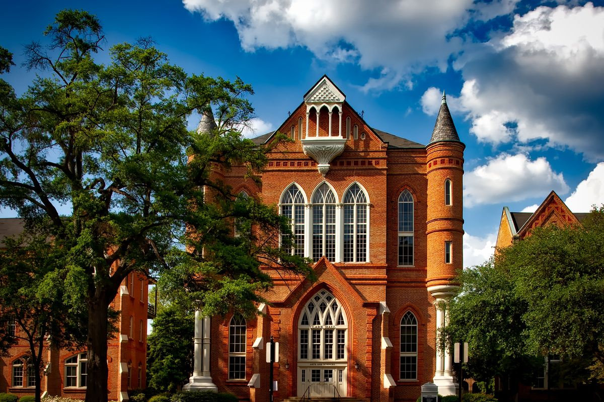

Orientación
5 aspectos que debes comparar antes de elegir una carrera
Conoce las variables más importantes para evaluar distintas alternativas académicas.
Leer másInformación y consejos para apoyar tu proceso de elección de Educación Superior.
Conoce las variables más importantes para evaluar distintas alternativas académicas.
Leer más
La ubicación, jornada y modalidad pueden cambiar considerablemente tu experiencia como estudiante.
Leer más